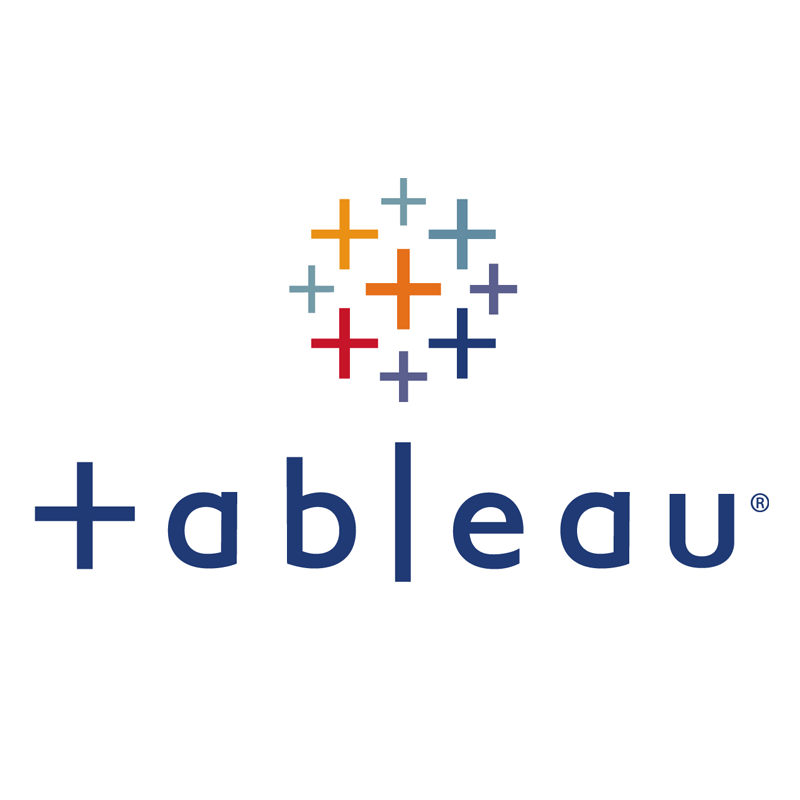

The Covid-19 Project is a Data Analysis, Exploration & Visualization project that focuses on the global impact of the Covid-19 pandemic and includes data on infection rates, vaccination rates, and other relevant metrics. The findings are presented in a final Tableau Dashboard.
This Tableau Dashboard is part of a project on Covid-19 and provides a detailed overview of the pandemic, highlights the key trends and insights that I have identified and visualizes information such as the Vaccinations progress, Total Deaths, Country Infections and more.

A Tableau Storyline for the laundry-pickup services startup "WeWashUSleep" with analysis & my recommendations on its expansion strategy.

A Tableau Storyline with Customer Insights for a UK Bank

Additional Tableau Visuals of mine such as dashboards, graphs and charts, created on an ad hoc basis or as part of my project work.